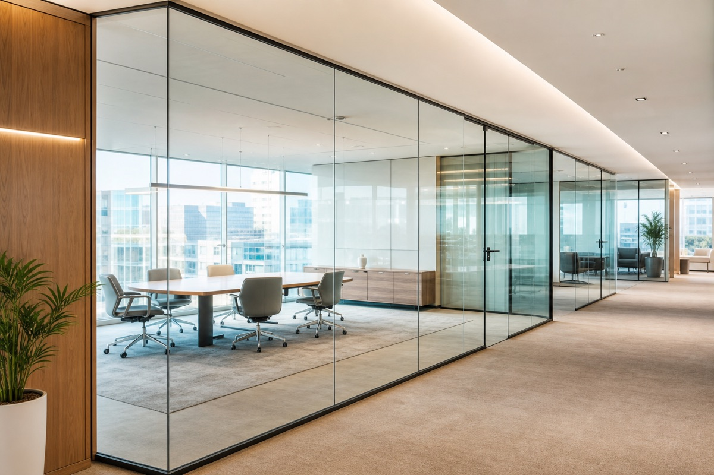

GlassStudio · Hyderabad
Office Glass Partitions in Hyderabad
Professional glass cabins and workspace partitions that keep your office open and bright.
Better-defined workspaces
GlassStudio helps create meeting rooms, manager cabins and divisions that preserve natural light. Every office glass partition is planned around workflow, privacy needs and the existing interior.
Clear and frosted designs are available for Hyderabad offices of different sizes.
- Cabin and meeting room layouts
- Frosted privacy choices
- Custom hardware finishing
- Measured for your workspace
Office partition applications
- Manager cabins
- Conference rooms
- Reception partitions
- Collaborative work zones
Refresh your office layout
Share your floor plan or workspace photo.